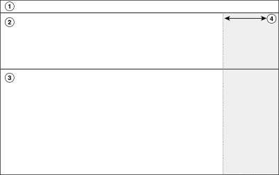

The implantable device app is divided into 4 areas.
| Area | Description |
|---|---|
| 1 | Status bar – Displays status information about the device manager components and the patient session. The status bar also displays the SUSPEND, RESUME, and EMERGENCY buttons. |
| 2 | Live Rhythm Monitor – Displays real-time waveform traces. |
| 3 | Work area – Displays the parameters, fields, and controls for the current window. |
| 4 | Navigation – Displays the menu. |